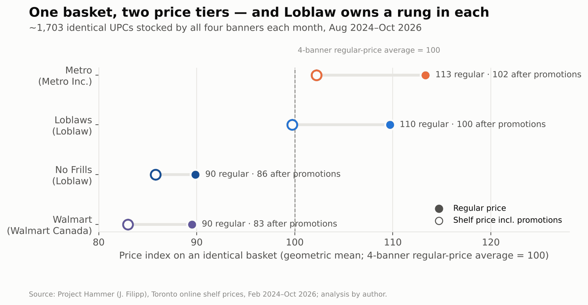
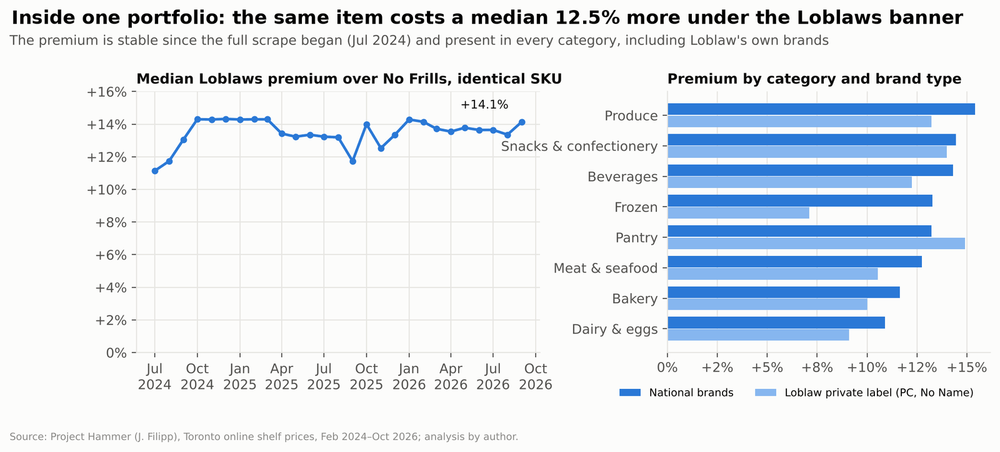
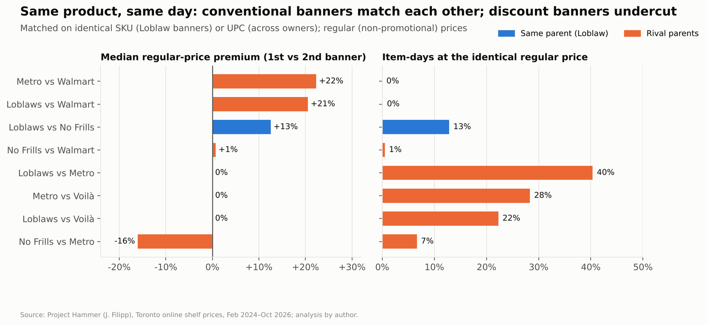
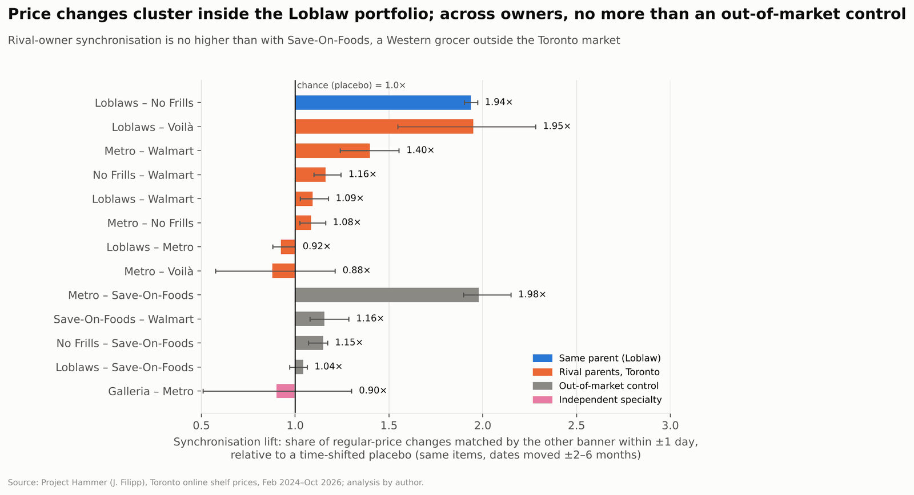
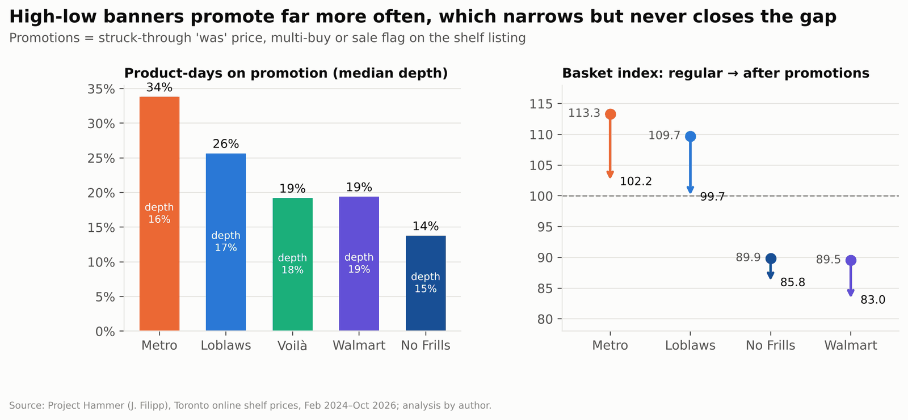

A shopper tired of high grocery bills stops going to Loblaws and starts going to No Frills. The receipt is smaller. But the money still goes to the same company, which owns both stores and sets both prices.
Canada's grocery market is often described as a contest between rival stores. In practice, a few parent companies each run a portfolio of banners spanning discount, conventional and premium tiers. That raises a question the overall price level can't answer: are these firms independent merchants competing item by item, or portfolio managers sorting shoppers by what they're willing to pay?
The data
I analysed 76.8 million daily shelf-price observations for eight Toronto grocery banners, from February 2024 to October 2026, using Project Hammer's public scrape of grocers' websites. I matched products item by item across stores, and used Statistics Canada's CPI and average retail prices for context.
The cleaning in Python and DuckDB separated regular prices from promotions and parsed multi-buy deals like "2 for $7". The results became an Excel workbook with live formulas, a 17-slide executive deck and a research memo. As a check, the scraped prices rose 3.4–6.3% between August 2024 and September 2026, in line with the 6.0% rise in Ontario's official CPI for food from stores.
What the shelf prices show
1. One basket, two price tiers
On an identical basket of about 1,700 products, Metro and Loblaws price about 20 points above No Frills and Walmart. The gap between tiers dwarfs the gap within them: 3.6 points separate Metro and Loblaws, and 0.3 separate No Frills and Walmart. Loblaw owns a banner in both tiers.

2. The banner itself is a price signal
Loblaws and No Frills share one product catalogue, which makes them the cleanest test of portfolio pricing. The same item costs a median 12.5% more at Loblaws, and 78% of 16,863 matched products are dearer there. The premium has held steady since mid-2024. It appears in every category, including Loblaw's own PC and No Name brands. Shoppers aren't paying for the product. They're paying for the store.

3. Rival conventional banners share price points
Loblaws and Metro are owned by different companies, yet they charge the identical regular price on 40% of matched item-days. When both change the same item's price, 29% of the time they land on exactly the same new price. Loblaws and Walmart almost never do (0.1%). For a shopper, comparison shopping between conventional banners yields very little.

4. Coordination in timing lives inside portfolios
Loblaws and No Frills change the same item's price within a day of each other 1.9 times as often as chance. Across rival owners, the figure is 0.9–1.4 times, no higher than with Save-On-Foods, a Western grocer that doesn't operate in Toronto. That points to shared supplier costs, not stores reacting to each other. No banner consistently moves first, and most changes appear on Thursdays, in step with the weekly flyer.

5. Promotions manage price image
The conventional banners put 26–34% of product-days on promotion, against 14% at No Frills. Those deals trim about 9–10% off their basket, which narrows the gap to the discount tier but never closes it. A struck-through "was" price works as an anchor: the higher the regular price, the bigger the visible saving.

6. No visible holiday price freeze
A November-to-February price freeze has been described as "industry practice", but it doesn't show up on the shelf. Price increases in that window ran at 0.84–1.09 times the rate of the rest of the year at the four main Toronto banners, with no statistically significant difference.
Why it works: the consumer-behaviour lens
Shoppers don't compare 1,700 items. They choose stores using shortcuts, and four of them turn this portfolio structure into durable pricing power:
- Choice-set illusion. Many banner names signal many competitors, but five of the eight banners studied belong to three parents.
- Anchoring. The conventional tier's regular price sets the reference point, so both "was" prices and the discount tier feel like savings.
- Tier sorting. Shoppers self-select into good, better or best banners instead of comparing identical items, so the portfolio captures every level of willingness to pay.
- Price image over price facts. Shoppers rely on a banner's overall reputation for price, and identical price points among conventional rivals remove the signal that would reward comparing them.
None of this requires explicit coordination. The architecture does the work.
What it means
- For regulators: assess concentration at the parent-company level, since the banner is a marketing device. Make "was" prices verifiable.
- For challengers: position against the conventional tier, where rivals share price points, with transparent everyday pricing instead of high-low promotions.
- For shoppers: compare across owners, not just banners, and treat "was" prices as anchors rather than proof of a saving.
Data: Project Hammer (Jacob Filipp), Toronto online shelf prices, Feb 2024–Oct 2026; Statistics Canada Tables 18-10-0004-01 and 18-10-0245-01; Competition Bureau Canada, Retail Grocery Market Study (2023).